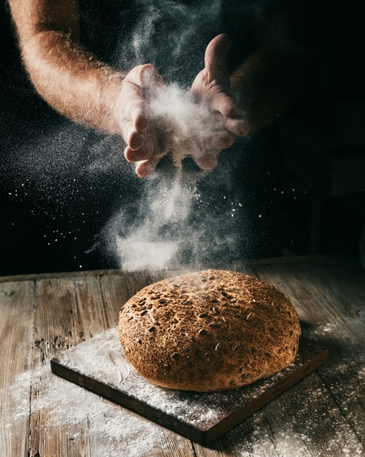
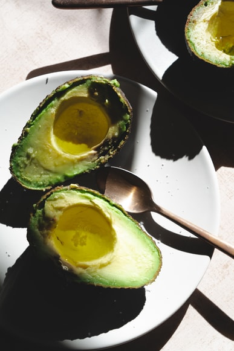

Das Haushuhn, kurz auch Huhn genannt, ist eine Zuchtform des Bankivahuhns, eines Wildhuhns aus Südostasien, und gehört zur Familie der Fasanenartigen. Landwirtschaftlich zählen sie zum Geflügel. Das männliche Haushuhn nennt man Hahn oder Gockel, etwas älter auch Poularde und den kastrierten Hahn Kapaun. -Lebenserwartung: 5 – 10 Jahre -Art: Bankivahuhn (Gallus gallus) -Familie: Fasanenartige (Phasianidae) -Ordnung: Hühnervögel (Galliformes) -Klasse: Vögel (Aves) Schokolade ist ein Lebensmittelprodukt aus gerösteten und gemahlenen Kakaoschoten, das in flüssiger, fester oder pastöser Form, allein oder als Aromastoff in anderen Lebensmitteln erhältlich ist. Kakao wird in irgendeiner Form mindestens seit der olmekischen Zivilisation (19.-11. Jahrhundert v. Chr.)[1] [2] konsumiert, und die Mehrheit der mesoamerikanischen Bevölkerung – einschließlich der Maya und Azteken – machte Schokoladengetränke.[3] Die Samen des Kakaobaums haben einen intensiven bitteren Geschmack und müssen fermentiert werden, um das Aroma zu entwickeln. Nach der Fermentation werden die Bohnen getrocknet, gereinigt und geröstet. Die Schale wird entfernt, um Kakaonibs herzustellen, die dann zu Kakaomasse gemahlen werden, unverfälschte Schokolade in grober Form. Sobald die Kakaomasse durch Erhitzen verflüssigt ist, nennt man sie Schokoladenmasse. Der Likör kann auch gekühlt und in seine zwei Komponenten verarbeitet werden: Kakaomasse und Kakaobutter. Backschokolade, auch Bitterschokolade genannt, enthält Kakaomasse und Kakaobutter in unterschiedlichen Anteilen, ohne Zuckerzusatz. Backkakaopulver, das mehr Ballaststoffe als Kakaobutter enthält, kann mit Alkali zu holländischem Kakao verarbeitet werden. Ein Großteil der heute konsumierten Schokolade ist in Form von süßer Schokolade, einer Kombination aus Kakaofeststoffen, Kakaobutter oder zugesetzten Pflanzenölen und Zucker. Milchschokolade ist süße Schokolade, die zusätzlich Milchpulver oder Kondensmilch enthält. Weiße Schokolade enthält Kakaobutter, Zucker und Milch, aber keine Kakaofeststoffe.  Brot ist ein Grundnahrungsmittel, das aus einem Teig aus Mehl und Wasser, meist durch Backen, hergestellt wird. Im Laufe der aufgezeichneten Geschichte war es in weiten Teilen der Welt ein bekanntes Nahrungsmittel. Es ist eines der ältesten von Menschenhand hergestellten Lebensmittel, das seit den Anfängen der Landwirtschaft von großer Bedeutung ist und sowohl in religiösen Ritualen als auch in der säkularen Kultur eine wesentliche Rolle spielt. Brot kann durch natürlich vorkommende Mikroben, Chemikalien, industriell hergestellte Hefe oder Hochdruckbelüftung gesäuert werden, die die Gasblasen erzeugt, die das Brot aufblähen. In vielen Ländern enthält handelsübliches Brot oft Zusatzstoffe zur Verbesserung von Geschmack, Textur, Farbe, Haltbarkeit, Nährwert und einfacher Herstellung.  Der Baum hat seinen Ursprung im feuchtwarmen tropischen Regenwald Mexikos und Zentralamerikas.Er wird heute in über 400 Kultursorten weltweit in den Tropen sowie in der Türkei, Südafrika, Israel, Kalifornien, Chile, Kolumbien, Peru, Australien, Neuseeland und Südspanien (Málaga, an der Küste von Granada) und in Afrika angebaut. Im Mittelmeerraum wird die Avocado seit Anfang des 20. Jahrhunderts kultiviert.